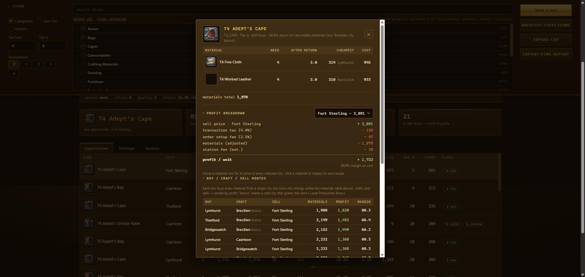
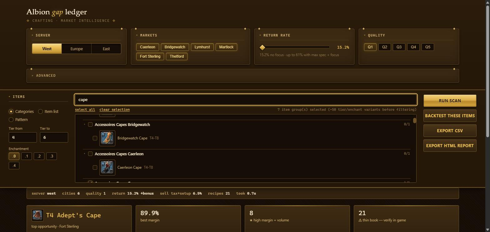
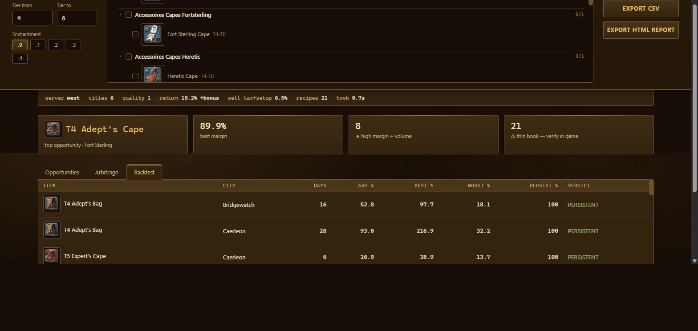

Key features
01 The full cost model
"Sell price minus materials" is wrong in five ways, so this models all of them: the transaction tax, the setup fee for placing an order, a station fee scaled by item value, the resource-return rate, and the city crafting bonus — converted into the game's own bonus-pool space rather than approximated. Artifacts and token inputs are correctly excluded from returns.
02 A score that discounts illiquidity
Ranking by margin alone surfaces items nobody trades, so the metric is margin% × ln(1 + daily volume). Rows are flagged rather than filtered — high-margin/high-volume, possible niche, or thin book — leaving the judgement call to the user.
03 Recipe drill-down
Click any result to see every material with its quantity after resource return, cheapest price and city, and line cost — then the full ledger underneath, sell price in green and each fee in red. Materials drill into their own recipes.

04 In-game-style item picker
Items are chosen from the game's own shop categories with icons and cascading checkboxes, plus tier ranges and enchantment levels that expand each pick into one scan row per level.

05 Backtesting
A margin visible right now might be structural or a five-minute artefact of one mispriced order. Backtest rebuilds daily margins from history and returns a verdict: persistent, intermittent or transient.

06 CLI and a zero-framework web app
The browser UI runs on Python's stdlib HTTP server with a single self-contained HTML file — no Flask, no build step, no CDN. Total dependencies for the whole project: requests and pandas. The CLI does everything too, plus CSV and offline HTML reports.
07 Defending against bad data
Prices are crowdsourced, so any listing can be a troll. An outlier guard recomputes profit from the recent volume-weighted average whenever the lowest sell order is more than 3× it. The API client is rate-limited to the published guidance with a sliding window, backoff on 429, and a SQLite cache that makes repeat runs free.
In short
This is a domain-modelling project disguised as a game tool — the code isn't complicated, but being right is, and every fee is a place where a plausible formula gives an answer that's off by 20%. It's also deliberately honest about its limits: the README has a "read this before trusting silver to it" section covering crowdsourced data gaps and where the station-fee estimate is approximate, because a tool that quantifies money is more dangerous when it hides its error bars.